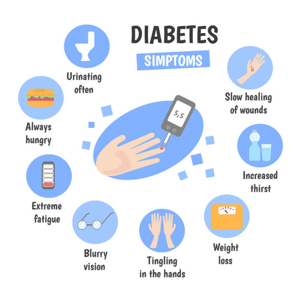

Symptoms of Type 1 Diabetes
- Frequent urination (polyuria)
- Excessive thirst (polydipsia)
- Unexplained weight loss
- Extreme fatigue
- Blurred vision
- Increased hunger
- Slow-healing wounds
- Diabetic Ketoacidosis (a dangerous condition caused by high blood sugar and ketone accumulation)

🩸 Diagnosis of Type 1 Diabetes
Early and accurate diagnosis is crucial to prevent complications like diabetic ketoacidosis (DKA).
📌 Common Diagnostic Tests:
-
1. Blood Glucose Tests:
- Random Blood Sugar Test: A glucose level of 200 mg/dL or higher indicates diabetes.
- Fasting Blood Sugar Test: A fasting glucose level of 126 mg/dL or higher suggests diabetes.
-
2. HbA1c (Glycated Hemoglobin) Test:
- Measures average blood sugar levels over the past 2–3 months.
- A result of 6.5% or higher confirms diabetes.
-
3. Autoantibody Testing:
- Detects diabetes-related autoantibodies in the blood (e.g., GAD, IA-2, ZnT8 autoantibodies).
- Helps distinguish Type 1 from Type 2 Diabetes.
-
4. C-Peptide Test:
- Measures insulin production levels.
- Low levels indicate Type 1 Diabetes, as the pancreas stops making insulin.
-
5. Ketone Testing (Urine or Blood):
- Detects ketones, which indicate diabetic ketoacidosis (DKA), a severe complication of Type 1 Diabetes.
⚠ Challenges in Early Diagnosis
-
1. Misdiagnosis as Type 2 Diabetes:
- In teens and adults, Type 1 is sometimes mistaken for Type 2 due to overlapping symptoms.
- Delayed diagnosis can lead to severe complications like diabetic ketoacidosis (DKA).
-
2. Gradual Onset in Some Cases (LADA – Latent Autoimmune Diabetes in Adults):
- Some adults develop Type 1 Diabetes slowly, making it harder to diagnose early.
-
3. Lack of Awareness Among Patients & Healthcare Providers:
- Many people (and even doctors) don't recognize Type 1 symptoms until they become severe. Even the awareness of the disease among people is negligible, as it is an unseen chronic illness.
-
4. No Routine Screening for Type 1 Diabetes:
- Unlike Type 2, there's no widespread screening for Type 1, making early detection difficult unless symptoms appear.